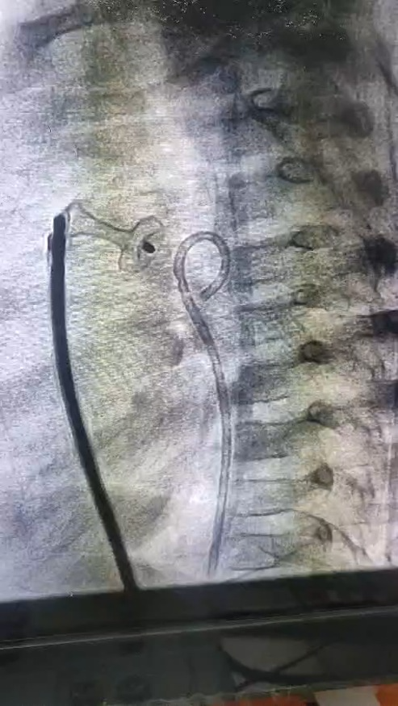
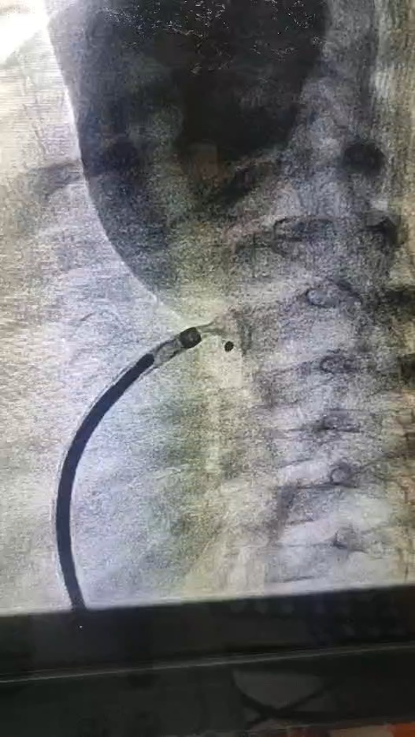
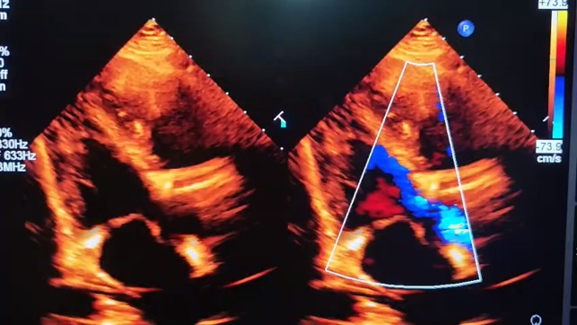
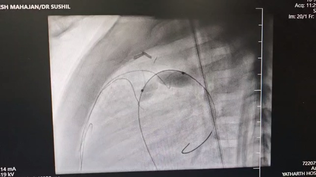

Advanced Catheter Procedures & Minimally Invasive Closures
Dr. Sushil Shukla is a specialist in Pediatric Interventional Cardiology, having performed more than **5,000 pediatric and congenital interventions** and **10,000 diagnostic catheterizations**.
These advanced procedures are performed in specialized cardiac catheterization labs. Using thin, flexible tubes (catheters) threaded through blood vessels, congenital defects can be treated without requiring open-heart surgery, resulting in shorter recovery times and minimal discomfort for children.
View Your Child's Journey ➔A safe, minimally invasive catheter-based therapy to treat Patent Ductus Arteriosus (PDA) in infants and children.
Patent Ductus Arteriosus (PDA) is a persistent opening between the two major blood vessels leading from the heart. PDA Device Closure closes this channel using an occlusion device delivered through a catheter, avoiding the need for open-heart surgery.
Clinical Procedure Video: Demonstrating transcatheter PDA device occlusion.
Safety and prep guidelines for pediatric cardiac catheterizations.
Includes diagnostic echocardiograms, clinical blood works, and fasting instructions depending on the child's age.
Performed under sedation or general anesthesia. The cardiologist monitors the catheter using advanced fluoroscopy and echocardiography.
Most children can go home within 24 hours of device closures with minimal physical restrictions for the next few days.
Actual clinical cases and imaging of pediatric interventional cardiology procedures performed under the care of Dr. Sushil Shukla.

Fluoroscopy showing transcatheter ductal occluder position.

Fluoroscopic check of the occlusion device delivery.

Color Doppler echo showing post-closure hemodynamic seal.

Catheter position for Right Ventricular Outflow Tract balloon dilatation.